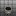
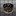
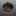
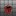

阿前的酒精爐
以下介紹阿前購買的與自製的酒精爐類型，一些DIY的辛酸血淚史(誤。還有其他買過太爛丟掉的，或DIY沒拍照做失敗品就丟了就沒放了。
索引
推 蝦皮手工酒精爐 (內旋風毛細酒精爐) 重量8g 網路購買
阿前第一個入手，也是最常帶上山的酒精爐，此款酒精爐燃燒效率高，製作要求也較高，不如買現成的來燒！
中間開口點火即可預熱酒精並快速啟動，透過凹折毛細管壁向小孔噴發，噴發時連帶搶走中心火焰，達到只有小孔噴火的效果。
內層粉紅色是因為一開始是買五金行工業酒精（甲醇）來燒導致染色，甲醇有毒！燒起來燻眼睛！不推薦燒甲醇！


賣場搜尋：輕量化酒精爐、旋風酒精爐、毛細酒精爐，或以圖搜圖找類似的產品。
推 淘寶小島酒精爐 (防火棉酒精爐) 重量18g 網路購買
看 YouTube頻道 Lifestyle C.C Land 入坑，上淘寶買對應的材料包製作。
內層捲上防火棉，讓酒精揮發速率降低，達到延長燃燒時間的效果。
此款酒精爐很方便自製，只要買得到對應的材料的話。


賣場搜尋：小島酒精爐，防火棉酒精爐，或以圖搜圖找類似的產品。也可以買類似的材料自製。
ALOCS愛路客酒精爐 (仿Trangia) 網路購買 已丟棄
原本Trangia的設計就有點黃火了，這款燃燒效率也沒手工酒精爐好，也比小島爐耗費能源，就算不用它的爐架，本體還是不輕，沒有什麼特別的優勢，不推薦。


當然這款效率還不是最差的，還有更便宜的燒起來效率都沒DIY的好的。
硬幣酒精爐(外側開孔＆內開孔加高爐壁) DIY 危險 已丟棄
YouTube搜尋Penny Stove有很多製作教學與燃燒影片。
中間小孔是洩壓孔，需要放置一塊錢壓住，使爐子維持高壓，達到小孔噴發的效果。
缺點是需要等待預熱，若氣溫冷，空氣缺氧都可能點失敗。且爐子壓力較大，若失敗後嘗試重新點燃，可能因為酒精蒸氣燃燒膨脹瞬間爆炸，使酒精液體噴發，是一款較危險需小心操作的酒精爐。


沙士鋁罐酒精爐 (外打孔內毛細失敗品) DIY 已丟棄
嘗試用沙士罐製作毛細酒精爐，外罐酒精盤，內罐外打燃燒孔，內層再額外疊一圈毛細層。
工具不妥，沒認真量高度，擠壓後毛細通道扭曲，燃燒效率又差，加墊棉布進去沒差太多，一整個又醜，就丟了。
魔爪仿貓罐酒精爐 (爐小空氣流通差效率不佳) DIY 已丟棄
嘗試用魔爪罐製作貓罐酒精爐，此款設計可不用爐架，鍋子直接疊上去也可燃燒，但爐體小，空氣流通慢，預熱時間長，馬上疊爐子很容易熄火。
嘗試放入一圈鋁圈改善預熱速度，卻容易讓酒精小小亂噴有點危險。後來改用大一點的罐頭製作後此款就丟棄了。

雪碧仿貓罐酒精爐 (失敗品) DIY 危險 已丟棄
嘗試用雙層結構打孔製作貓罐酒精爐，不妥當的雙層加打孔設計，導致酒精蒸氣在縫隙中流竄，點燃後火焰不穩，酒精容易亂噴，非常危險！！

推 罐頭酒精爐（墊高可燒異丙醇） 重量23g DIY
嘗試使用罐頭製作一般的貓罐酒精爐，此款設計可不用爐架，鍋子直接疊上去也可燃燒。非常好DIY的爐子。
注意第一次燃燒罐頭外壁的漆被燒掉時要離遠一點，感覺有毒。

後來嘗試使用異丙醇燃燒容易黑鍋，又在網路上查到有款 IsoClean 異丙醇酒精爐可以燒異丙醇的時候極大程度的不黑鍋，但打孔的設計與貓罐酒精爐非常的類似，發現原來只要讓火焰口與鍋底維持1.2cm左右的高度，即可達到類似效果。
具體原理應該是火焰層流穩定，與空氣混合比較佳，所以才可以燃燒較完全（就不容易黑鍋），但燃燒效率稍微降低，燃燒時間更長；好似上方疊超密的鐵網讓火焰通過的時候可以跟空氣更好混和也有類似效果。
IsoClean (後來改名為Multi-Fuel，因為其實也可以燒別的燃料)的製作流程影片：How we make the Multi-Fuel stove by FLAT CAT GEAR
自帶爐架的改良版 重量47g DIY
為了達到IsoClean自帶爐架可燃燒異丙醇減少黑鍋的效果，嘗試綁上螺絲當作爐架，但放置在內外差異非常大！
改良失敗 放置在爐子內，螺絲因受火加熱，間接導致異丙醇加熱沸騰，讓異丙醇蒸氣過度膨脹，反而由進氣孔噴發火焰，空氣沒辦法透過進氣孔進氣維持完全燃燒，導致黃火黑鍋！

改良成功 調整到綁在外圍，終於出現較平穩的藍色火焰，有帶一些部分黃火，但還可以接受，燒完水後鍋子僅有邊緣稍微黑鍋；應該也可以再嘗試縮短螺絲高度。


可樂罐棉質酒精爐 (失敗品) DIY 已丟棄
嘗試使用用可樂罐捲入棉布延長酒精燃燒。
因非防火棉，表面會燒焦；燃燒速率太慢，不容易煮開水，不實用，又做得醜醜的，就丟棄了。

雪碧酒精爐 (側邊壓痕毛細酒精爐) 重量13g DIY
使用雪碧罐製作雙層酒精爐，改以側邊壓痕的方式來製作毛細管道，製作較容易，燃燒效率也還不錯。
參考YouTube上的製作教學製作而成：〔語音版〕自製鋁罐酒精爐｜調整及修改鋁罐酒精爐〔Vocal version〕DIY a can stove and to adjust to be more efficient


雪碧鋁罐酒精爐 (IonStove) 重量11g DIY
純粹的中心打孔與外層通氣孔，實際燃燒時意外的可以燒非常非常久，類似防火棉酒精爐，但也因此煮水幾乎只能小滾或不太滾。不確定汽水罐底的形狀會不會影響燃燒，因為參考目標是用平底罐子。
此類設計主要燃燒孔應該還是以中間為主，周圍的孔只是幫助進氣而已。所以中間開孔越小，火焰應該就越小，且更不容易點燃。
中心開孔為3cm：

參考此網頁製作教學製作而成：https://hikinghq.net/ionstove/build.htm
IonStove Remake (失敗品) DIY 已丟棄
嘗試重新依造上述網頁製作尺寸，並且改由波蜜鐵罐製作，這樣就有兩個平底。改用原設計燃燒效率比雪碧鋁罐還差，25ml酒精竟然燒了四十多分鐘。
後為了嘗試改善進氣，開始在周邊也打孔，但效果更糟了，火焰會以一種脈衝波的形式瞬間噴發、減小、噴發、減小。甚至嘗試周圍底部留空隙，也無法改善。
打了外層進氣孔後的模樣，已跟當初設計不同；中心開孔為一吋(2.58cm)

若捲了鋁圈放在中間，變雙層結構，燃燒效率會稍微變好，但火還是很小，且就離原本IonStove的設計越來越遠。
不知道網頁上的爐子設計為何可以正常運作，而且網頁上寫是鈦製，但鈦的導熱性也沒鋁好，而這次選擇的鐵罐是最差的，所以酒精爐的選擇上，材質也許也有影響； 也或許有些設計沒有在網路上廣泛流傳的原因，是本身就非常難重現效果，某些眉角原作者沒提到之類的。
UCC BLACK 274ML 酒精爐 重量15g DIY
利用UCC鋁罐錐狀瓶身設計，瓶口直接當成內壁，並且剪切凹折後縫隙可兼當燃燒孔，一兼二顧摸喇阿兼洗褲。
需要兩個UCC罐子，一個當酒精盤，一個尾部打洞當外壁與瓶口當內壁。
初期燃燒效率意外的極好，水很快就滾了，但後期因內層空間太大，殘火延燒很久才熄滅。若要改良應該要嘗試降低爐子高度(但瓶口也要切一下)。


UCC AROMA 290ML瓶口+小鋁罐酒精爐 重量14g DIY
UCC BLACK 274ML 酒精爐的縮小版，這個版本的瓶口材質較堅固，使得縮小版重量沒差很多。爐體是改由類似能量飲料較小的罐體製作。
瓶口較小初期預熱啟動較慢，但啟動後效果不錯。且縮小內層空間後，壓力稍增，且殘火較快結束，驗證了原本的想法。
折翼的長度太短，密封度不佳，導致實際上是由一整圈外圍竄出火焰而非縫隙打孔的區域。但貌似不影響燃燒效果